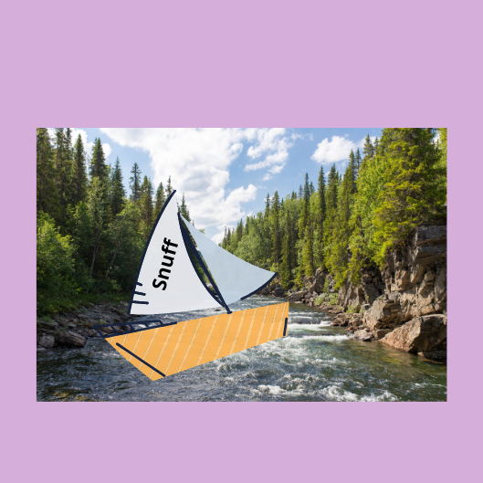
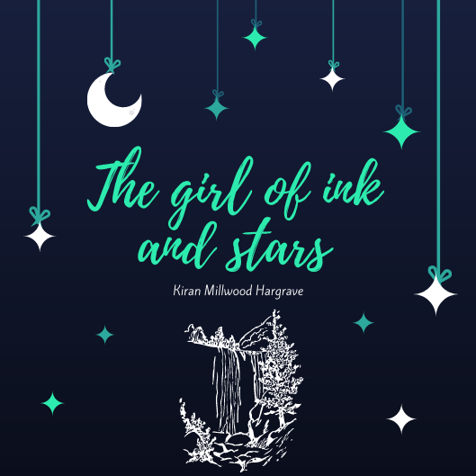
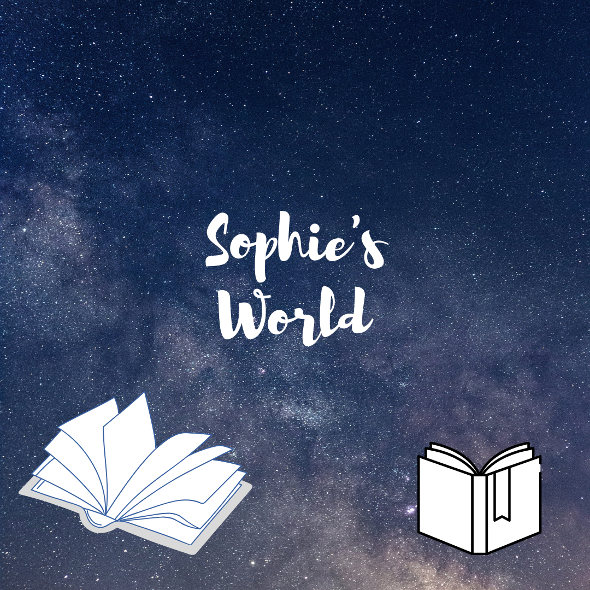
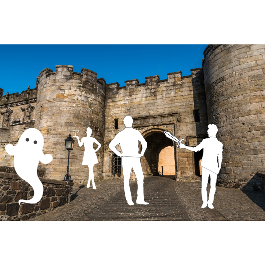

Welcome
Welcome to my Bookweb. I will post here a review of the books I've read. I read a lot of books, I will add a new review once in a two weeks. But I can forget, sorry, for that if it happens.
I am from the Czech republic. So English isn't my first language. Please, don't be rude, I write with a lot of mistakes. Also one of the reasons, why I am making this website is to practice English.
I believe that if you really love books (like me) you can find this web quite interesting.
Fantasy
The Rain Wild Chronicles by Robin Hobb
1. Dragon Keeper
I read this book in Czech language so it can be a bit different of the original in English. The Czech translation of this book is guite good, if you want to read it in Czech.
The Dragon Keeper is the first of four books that are now written in the series with title Rain Wild Chronicles. It's written by Robin Hobb, an American autor. For the first time was the book published in 2009. The Czech translation was published in 2018 by Fragment.
At the beginning of the book are born a few dragons. It's because Tintaglia - the last adult dragon want it. People must help the baby dragons survive because before that Tintaglia helped them. One of the main character is
Alice - a dragon expert. One day she goes to visit the baby dragons. When she arrives to Rain Wild (this is were the dragons are) an expedition is just leaving. In this expedition are dragon keepers, dragons and one boat. The expedition is going to find for dragons better place to live. Alice decides to go with this expedition like their dragon expert. They have a lot of adventure before them and it's going to be a long way.
This is an average fantasy. Dragons are the noble species and people are their servants. I think it's more book for girls than boys because there's a lot of love stories. It's written in a simple language so you can read it realy fast. So for the end - the book isn't bad but it surely isn't outstanding or the best you're gonna read.
2. Dragon Heaven
This is the second book in the series Rain Wild Chronicles by Robin Hobb. It was published in 2015, the English original paperback has 576 pages. I read Dragon Heaven also in Czech.
The expedition with dragons continues. They have a daily routine and it seams like every day is the same like the day before. But suddenly it starts to rain and the Wild Rain River flows outnof the banks. Now the water is everywhere and it is dangerous to stay for long time in the river because the water is sour. Dragons and their keepers can't see anybody because their on their own in a dangerous river. Can they survive this catastrophe?
This book is practicly the same as the Dragon Keeper. It's a clasic fantasy with dragons and superhumans - Elderlings. It's not a groundbrakiong literature but if you want to chill out, it's not a bad reading.
A tale o magic
Do you like magic tales in fantasy lands? Yes? Then this is a book for you. Chris Colfer already wrote a series of six books called The land of stories. Story in this book is also from the land of stories but it’s happening before it. It was published in 2019.
The main character is fourteen-year-old girl Brystal who loves books. But in the land where she’s living it’s forbidden for girls to read so she read only in the night under the blanket. It happens that she hasn’t got anything to read so she starts going to the library like a cleaning woman. One day she finds a secret room full of forbidden books. She reads all of them and the last is a book about magic. There’s a spell that will test you if you’re a witch, a fairy or just a normal person. It appears that Brystal is a fairy! And this is when the real adventure begins. Brystal is going to have a life full of magic adventures!
That’s a nice tale full of lessons learned. Chris Colfer writes beautiful and modern tales for kids, I think between eight and twelve years. For me like a teenager it was too naive and too simple but for the younger, why not? I would recommend this book to girls but not as much to boys because nearly all of the main characters are women and girls.
Snuff
Terry Pratchett wrote lots of humorous and crazy books and this is one of the best. It was published in 2012 and it’s got 512 pages.
Sam Vimes is a police legend he never takes a vacation but one day he has to. His wife wants to go to a small village where there is a really big house that they own. Sam Vimes is bored and he wants to have some action. After a few days it appears that hís wish can be fulfilled, it starts to happen a very strange things around the village and Sam Vimes is going to examine it.
What would I do without books by Terry Pratchett? I read nearly every of his books and I like all of them, especially the books from Discworld and this is one of the best. Pratchett has a good sense of language. He can make really amazing things with words and names. And this book is more full of tongue beads than every other. In this book it is very nice and people can’t adopt orcs like thinking beings. I admire the translator Jan Kantůrek because the book is in Czech as good as in English.

The girl of ink and stars
This book is the winner of Waterstones Children's Book Prize 2017 and the British Book Awards' Children's Book of Year 2017. It is written by Kiran Millwood Hargrave, a young british author.
Isabella lives on Joya, an island. She lives with her father, her mother and brother are dead. She has only one good friend, Lupe, governor’s daughter. Governor Adori colonizes Gromera, a village where Isabella lives. One day a dead Cata’s body is found, looking like some monster killed it. Isabella and Lupe have an argument. After that Lupe decides to prove that she’s not roten and she goes to a dangerous forest and forgotten part of the JOya island to find a Cata’s killer.
This is one of my favourite books and I’m not kidding, this book is fabulous. The story is really thrilling and interesting. Also the look of the book is amazing. One of the topics in this book is cartography. You can learn some beginnings of cartography from this book. Friendship is one of the most important things in this book and I believe that it is important in a normal life too. I would recommend this book to people about ten to fifteen years old.

Girl's Novel
More of Me
More of me is a book by Kathryn Evans. I don’t really know what genre it is. On the internet you can find a lot of opinions about what genre it is but they’re all different. I would say it’s a girl’s novel. It was published in 2016, so it’s quite a new book. Kathryn Evans wrote eight other books.
The main character of this book is Teva. In the book are twelve Teva’s but the main character is the oldest sixteen years old. How can it happen that there are twelve Teva’s? It’s simple, nearly every birthday the oldest Teva is something like duplicated. That sounds crazy, doesn’t it? Because it’s weird to have twelve versions of only one person, public life is always living the newest Teva the duplicatel. She goes to school, meets up with friends, has a boyfriend but the other Teva’s are stuck in home and can’t do anything. The Teva in More of me doesn’t want to live for a one year and then be stuck home forever. She wants to do something with it. But can someone help her?
What a nonsense I thought in the first place. The first fifty pages aren’t written good. You can’t understand the story and it’s hard to get the story line. The next part of the book is better - you begin to understand it more and more. The style of story-telling is the same in a classic girl’s novel but there is add the weird thing with duplicating. I think the idea with duplicating Teva like greenfly is very good. I would say that all in the book is quite good but quite a nonsense too.
Sophie's World
This book by Jostein Gaarder is a philosophical novel. The first edition was in norwegian in 1991. It was translated into English in 1994. I have read it in Czech, the czech version was published in 2012.
Sophie is a fifteen year old girl from Norway. One day she starts to get letters from one philosopher Alberto Knog. The letters are about the history of philosophy. Sophie’s interested, she finds philosophy so interesting! After a short time she starts to even meet with Alberto and what are they talking about? The philosophy, of course! But suddenly they find out that there is another girl - Hilda - so similar to Sophie.
The recommendation is for 15+ but I read for the first time when I was eleven and it was okay. It can be a bit difficult because there are many of the philosophical interviews. I enjoyed the story and I have learned a lot about philosophy. I just don’t like the ending as much as the whole book. It was more crazy than I expected and wanted, it wasn’t horrible. It just wasn’t my cup of tea. That’s all. But I recommend this book for teenaers who want to enjoy a story and learn something about philosophy and it’s history.

Sci-fi
Blackfish City
Blackfish is post-climate-colapse sci-fi book by Sam J. Miller. It was nominated for the Nebul price. This is the second book by Sam J. Miller.
The plot is happening in Qaanaaq - one of the post apocalyptic cities. There are a few people that are telling the story of the book. One of them is Ankit, thirty-years-old lady who live alone. She is an orphan and doesn't know anything about her history. She's got only brother but she saw him oncea live. Kaev - Ankit's borther - is some kind of wrestler. One day it starts to happen weird things in the city Qaanaaq. It seems like everything is in circle and it's going back to Ankit and Kaev. What will happen to them? And is the mistical woman with killer whale real?
At the beginning I thaught this is really silly and boring book but I read on and it was still more and more interesting. The last few pages I read at once. The story is very complicated and there are many story lines that are intertwined. On the internet is this book rated like for adults but I think it is intereatinf reading also for teenagers. I really enjoyed it.
Hamlet
You know the author, don’t you? It’s William Shakespeare, of course. The most famous british tragedy author. And this is one of his most known books. The story is based on an old scandinavian story about a prince Ur-Hamlet. So Shakespeare didn’t think out the whole story but in the form we know, it’s his book and his own story.
At the very beginning there's a ghost of the dead danish king, Hamlet’s father. The truth is that this king was killed by Claudius, Hamlet’s uncle. So Claudius killed Hamlet’s father he took as wife Hamlet’s mother and now, he’s trying to be Hamlet’s father? Everyone thinks it’s okay, only Hamlet doesn’t agree with that and he’s trying to think of a way that can prove that the killer is Claudius. Somehow it happens that in the castle is a theatre company. Hamlet forces them to play a game, similar to Claudius’s situation. When they play Claudius starts to play very weird and that’s the point, where all of the things start to be more and more complicated.
I didn’t think I would but I quite enjoy the story. I had it like required reading from school so it wasn’t my own intention to read Hamlet. I have read some other Shakespeare’s books and I quite enjoyed them as well. The beginning was really boring for me, but then it started to be more and more interesting. Shakespeare can very well describe bad human behavior - Hamlet is book of revenge.
